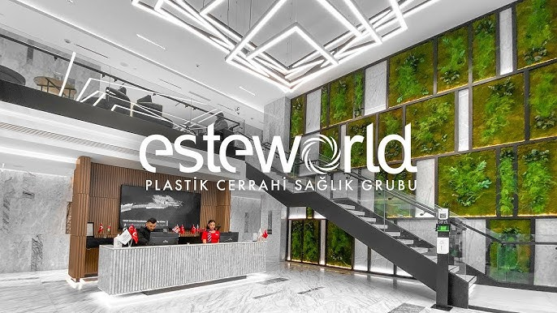

| Anasayfa | Doktorlarimiz | Hakkimizda | Sac Ekimi | Iletisim | Randevu Al |

HAKKIMIZDA
Sağlıklı güzellik için ayrıcalıklı bir deneyim!
Türkiye’nin plastik ve estetik cerrahi odaklı hizmet sunucusu olan Esteworld Sağlık Grubu olarak, ‘’Sağlıklı güzellik!’’ mottosuyla 25 yılı aşkın süredir yüksek tıbbi standartlarda estetik hizmetleri sunuyoruz.
Plastik cerrahi, saç ekimi, diş tedavileri ve medikal estetik alanlarında hizmetlerimizi, grubumuzda tam zamanlı
çalışarak global kalite standartlarımıza uyan uzmanlar ile veriyor, konfor ve başarılı sonuçları bir araya getiren
uygulamaları ile dünya çapında binlerce kişinin hayatını güzelleştiren bir marka olmanın gururunu yaşıyoruz.
İstanbul’un her iki yakasında son teknoloji cihaz ve materyaller ile donatılmış birimlerimizde toplam 4 adet
ameliyathanemiz, 17 adet saç ekimi ve 7 adet diş ünitemiz, 1 adet laboratuvarımız ve 700 kişilik personelimizle
sizlere konforlu ve lüks estetik hizmetleri sunuyor; ayda 1500’den fazla operasyon gerçekleştiriyoruz.
Altunizade -Köşk, Ataşehir ve Bahçelievler’deki şubelerimizde klinik hizmetleri sunarken, Altunizade’deki 10.000
metrekarelik, modern ve yatışa uygun tüm donanımlara sahip 25 odalı hastanemizde konuklarımızı ağırlıyoruz.
Misafirlerimizin beklenti ve isteklerini karşılayan en yeni teknolojileri kullanarak çözümlerimizi sürekli güncelliyor ve
kalitemizi arttırmak konusunda kendimizle yarışıyoruz. Tıbbi olanaklarımız, güvenli ve kaliteli hizmet anlayışımızla
tüm konuklarımızın tam da istedikleri görünüme kavuşmaları için elverişli koşullar oluşturuyoruz. Uzman hekimlerimiz
ve mükemmeliyetçi bakım personelimizle birlikte, misafirlerimize işlem öncesi ve sonrası tüm süreçleri standartların
ötesinde bir konforla geçirme fırsatı sunuyoruz.
Sağlık Bakanlığı ve TÜV Thüringen (ISO 9001) tarafından belgelendirilen firmamızın, aynı zamanda European
Property Awards tarafından kamu hizmeti alanlarında ödüllendirilmiş hizmet birimlerine sahip olmasından gurur duyuyoruz.